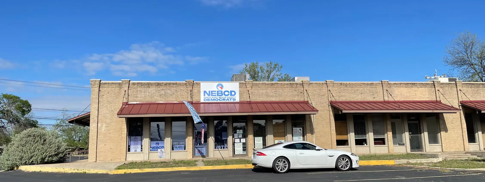
Democracy Lives
in the Neighborhood
The North East Bexar County Democrats raise funds, organize volunteers, and maximize voter turnout — right here in our community.
Upcoming Events
Stay connected and show up. Every event is a chance to make a difference.
Democratic Primary Runoff — Election Day
Vote in the Democratic Primary Runoff. Find your polling location, check your registration, and view your sample ballot before you go.
RSVP / Learn More →Wednesday Night Potluck
Join us every Wednesday for our community potluck night!
Sign Up on Mobilize →Coffee with Zada
Join us for coffee and conversation! Featuring weekly topics and guest speakers. May 19th Topic: AI Data Centers
Sign Up on Mobilize →Building Democratic Power in Northeast San Antonio
We focus on fundraising for impactful initiatives and organizing activists across Bexar County. From monthly membership meetings to election-season canvassing, everything we do is aimed at boosting engagement and maximizing voter impact.
Monthly Meetings — 2nd Saturday of each month, 10 a.m. to noon.
Join the Movement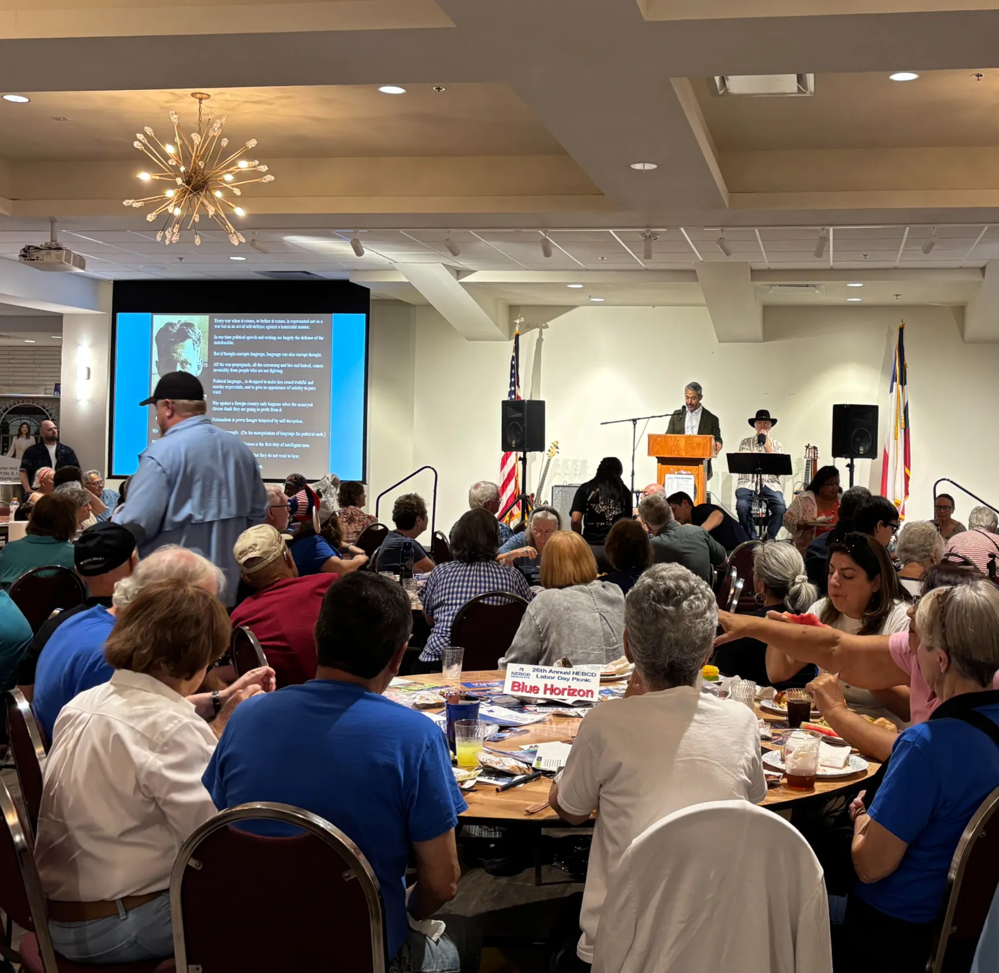
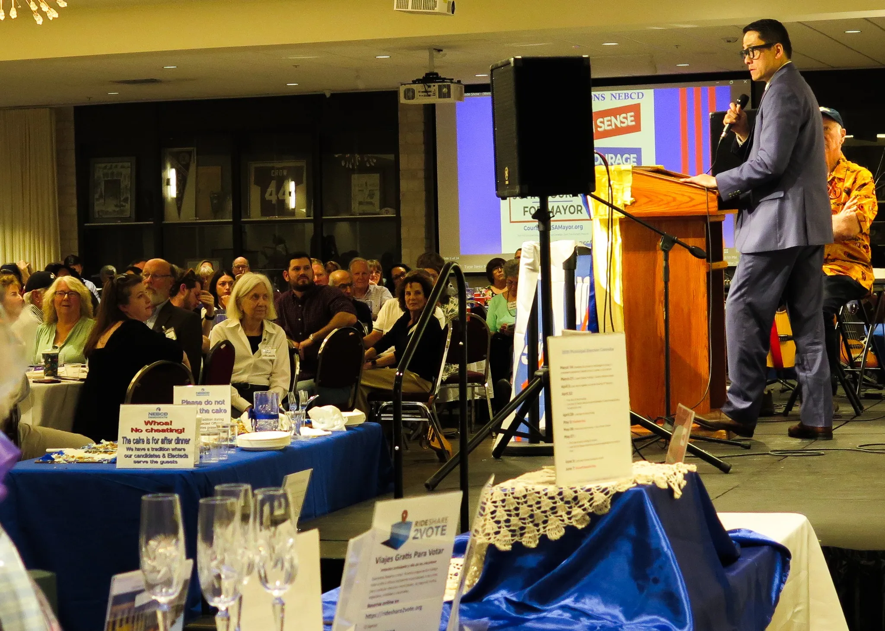
Our Endorsements
NEBCD proudly endorses these candidates for the 2026 election cycle.
There's a Place for You Here
Whether you have five minutes or five hours, your participation moves the needle.
Become a Member
Join NEBCD and help fund grassroots organizing across Northeast Bexar County. Dues go directly to voter outreach, canvassing, and candidate support.
Join on ActBlue ↗Volunteer
Phonebanks, canvassing, event setup, data entry — there's a role that fits your schedule. Sign up and we'll match you with an opportunity.
Sign Up to Volunteer →Sponsor an Event
Partner with NEBCD by sponsoring our signature events — Dining with Democrats and the Labor Day Picnic. Great visibility, great community.
View Sponsorship Options →NEBCD in the Community
From courtrooms to cookouts — your neighbors showing up for democracy.
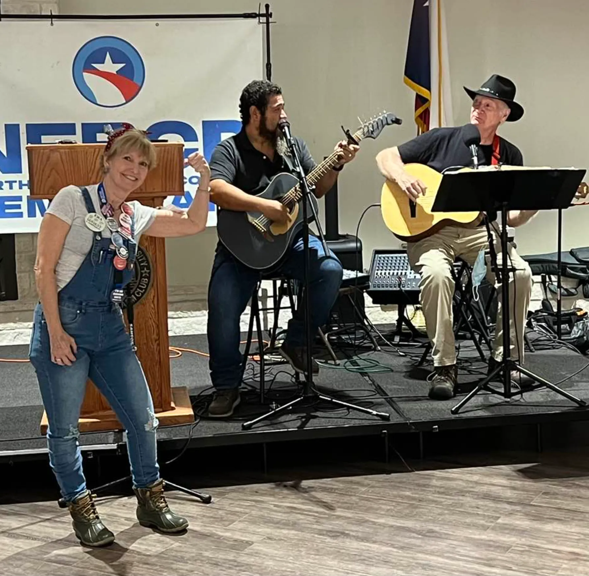
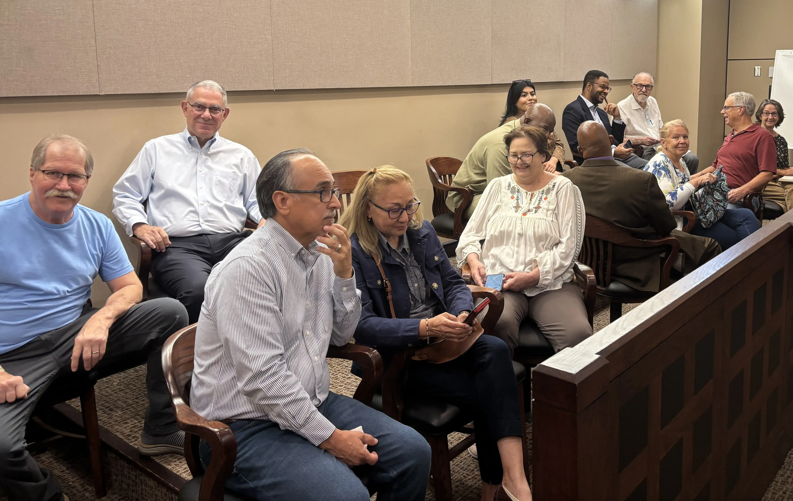
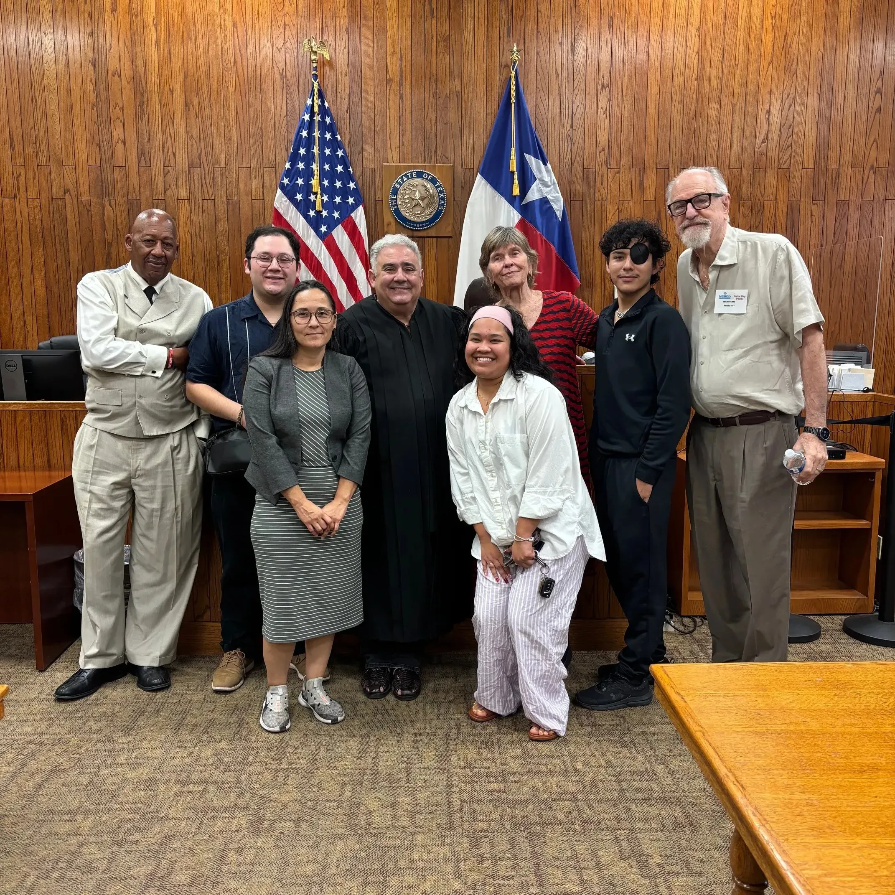
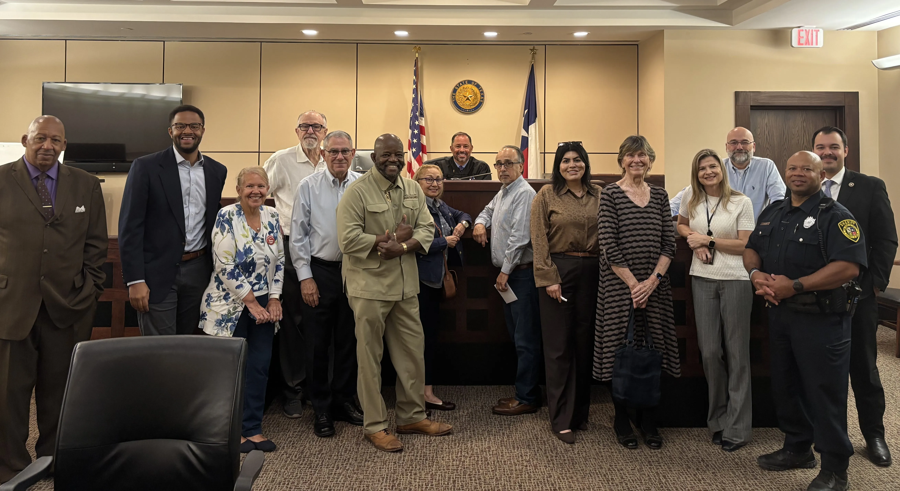
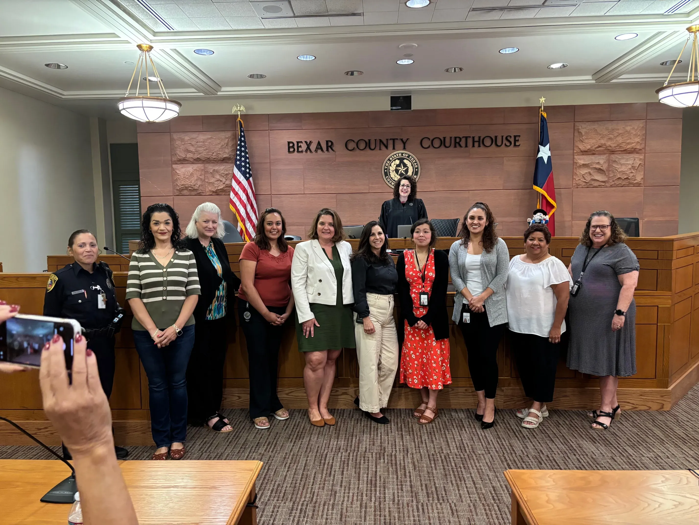
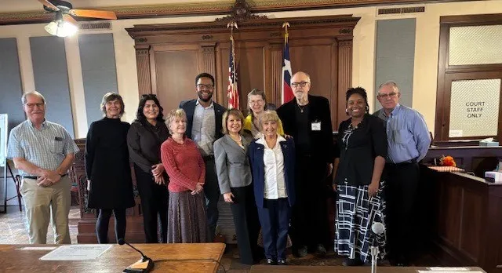
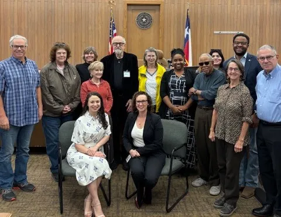
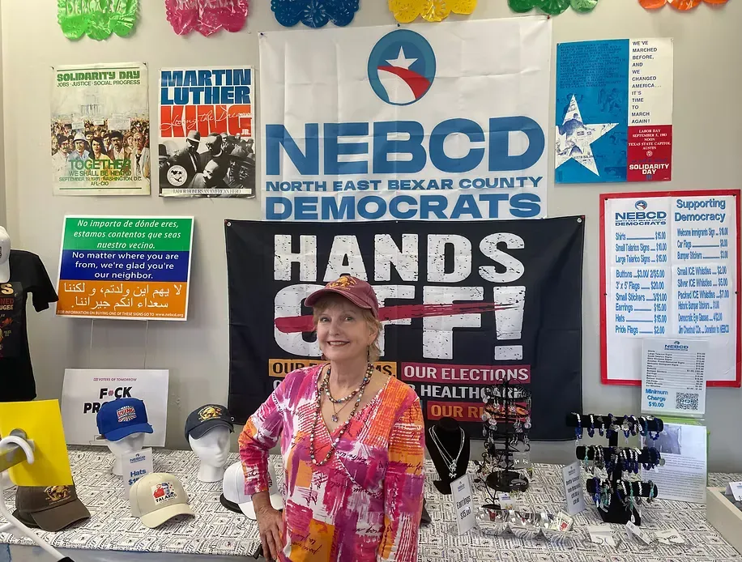
Our Door Is Always Open
Come by the NEBCD office. You'll be greeted by Madeleine and Ladybug the Pug. Check out our swag shop, say hi to Lausanne, and in the back you'll find Cameron — who can connect you with efforts in your area.
San Antonio, TX 78216
Wednesday: 8 AM – 7 PM
Sat–Sun: Closed (except events)